Code
%load_ext autoreload
%autoreload 2Here, we run all our classification models so that we can compare them side-by-side. We compare a dummy model and simple logistic model to logistic models with two regularization strategies (L1 and L2), a decision tree model, a random forest model, and a boosted regression tree model. Hyperparameters are tuned using either GridSearchCV or RandomizedSearchCV. We also run our models on several different splits to understand the limits of our models.
'''Import all relevant modules here and define root directory.'''
# Define root directory
import sys
from pathlib import Path
# Make src importable from any notebook folder (identical in every notebook)
sys.path.insert(0, str(next(p for p in [Path.cwd(), *Path.cwd().parents] if (p / "src").is_dir())))
from src import paths
ROOT = paths.ROOT
# Modules imported form outside
import numpy as np
import pandas as pd
import matplotlib.pyplot as plt
import xgboost
from sklearn.pipeline import make_pipeline
from sklearn.impute import SimpleImputer
from sklearn.preprocessing import StandardScaler
from sklearn.dummy import DummyClassifier
from sklearn.linear_model import LogisticRegression
from sklearn.tree import DecisionTreeClassifier
from sklearn.ensemble import RandomForestClassifier
from sklearn.metrics import roc_auc_score, roc_curve
from sklearn.calibration import calibration_curve
# Modules internal to this project
from src.models.evaluate import CONFIGS, run_models, tuned, all_features, linear_features, load_predictions
from src.evaluation.results_log import load_runs, summarizeThe following cell is used to set up necessary variables and define the parameter grids used for hyperparameter tuning.
BRIER = "neg_brier_score" # tune for well-calibrated probabilities
C_VALUES = np.logspace(-4, 2, 13)
TREE_DEPTHS = [2, 3, 4, 5, 6, 8, 10, 15]
RF_GRID = {
"max_depth": [6, 8, 11, 15, None],
"max_features": ["sqrt", 0.3, 0.5],
"min_samples_leaf": [1, 5, 20]
}
BRT_GRID = {
"learning_rate": [0.03, 0.05],
"n_estimators": [20, 35, 50, 75, 100],
"max_depth": [2, 3, 4],
"min_child_weight": [5, 20, 50],
"subsample": [0.5, 0.7]
}The following cell contains our list of classification models.
CLASSIFICATION_MODELS = {
"Dummy (prior)": ("Team", lambda: DummyClassifier(strategy="prior"), all_features),
"Logistic": ("Andrea", lambda: linear_pipe(LogisticRegression(C=np.inf, max_iter=5000)), linear_features),
"Logistic L2": ("Andrea", lambda: tuned(linear_pipe(LogisticRegression(max_iter=5000)), {"logisticregression__C": C_VALUES}, BRIER), linear_features),
"Logistic L1": ("Andrea", lambda: tuned(linear_pipe(LogisticRegression(l1_ratio=1, solver="liblinear", max_iter=5000, random_state=0)), {"logisticregression__C": C_VALUES}, BRIER), linear_features),
"Decision tree": ("Gavin", lambda: tuned(DecisionTreeClassifier(min_samples_leaf=20, random_state=0), {"max_depth": TREE_DEPTHS}, BRIER), all_features),
"Random forest": ("Charlsey", lambda: tuned(RandomForestClassifier(n_estimators=300, random_state=0, n_jobs=1), RF_GRID, BRIER, n_iter=10), all_features),
"XGBoost BRT": ("Karuna", lambda: tuned(xgboost.XGBClassifier(objective="binary:logistic", max_bin=64, random_state=0, n_jobs=1), BRT_GRID, BRIER, n_iter=20), all_features),
}'''Run all models on each of the splits/configurations. The last fold in each split is set aside in each case for final validation.'''
RUN_MODELS = True # True: refit every model (about 20 minutes per notebook); False: load the saved predictions
if RUN_MODELS:
devs, oof = run_models(CLASSIFICATION_MODELS, task="classification")
else:
devs, oof = load_predictions("classification")Saved 4 folds to results/model_runs/team__dummy-prior__classification__10km__subbasin0__noelev0.csv
10km subbasin=False Dummy (prior) 0.1 s
Saved 4 folds to results/model_runs/andrea__logistic__classification__10km__subbasin0__noelev0.csv
10km subbasin=False Logistic 0.1 s
Saved 4 folds to results/model_runs/andrea__logistic-l2__classification__10km__subbasin0__noelev0.csv
10km subbasin=False Logistic L2 4.6 s
Saved 4 folds to results/model_runs/andrea__logistic-l1__classification__10km__subbasin0__noelev0.csv
10km subbasin=False Logistic L1 2.9 s
Saved 4 folds to results/model_runs/gavin__decision-tree__classification__10km__subbasin0__noelev0.csv
10km subbasin=False Decision tree 1.0 s
Saved 4 folds to results/model_runs/charlsey__random-forest__classification__10km__subbasin0__noelev0.csv
10km subbasin=False Random forest 33.5 s
Saved 4 folds to results/model_runs/karuna__xgboost-brt__classification__10km__subbasin0__noelev0.csv
10km subbasin=False XGBoost BRT 4.4 s
Saved 4 folds to results/model_runs/team__dummy-prior__classification__10km__subbasin1__noelev1.csv
10km subbasin=True Dummy (prior) 0.0 s
Saved 4 folds to results/model_runs/andrea__logistic__classification__10km__subbasin1__noelev1.csv
10km subbasin=True Logistic 0.1 s
Saved 4 folds to results/model_runs/andrea__logistic-l2__classification__10km__subbasin1__noelev1.csv
10km subbasin=True Logistic L2 1.3 s
Saved 4 folds to results/model_runs/andrea__logistic-l1__classification__10km__subbasin1__noelev1.csv
10km subbasin=True Logistic L1 3.5 s
Saved 4 folds to results/model_runs/gavin__decision-tree__classification__10km__subbasin1__noelev1.csv
10km subbasin=True Decision tree 0.9 s
Saved 4 folds to results/model_runs/charlsey__random-forest__classification__10km__subbasin1__noelev1.csv
10km subbasin=True Random forest 30.7 s
Saved 4 folds to results/model_runs/karuna__xgboost-brt__classification__10km__subbasin1__noelev1.csv
10km subbasin=True XGBoost BRT 3.2 s
Saved 4 folds to results/model_runs/team__dummy-prior__classification__10km-subbasin__subbasin1__noelev1.csv
10km_subbasin subbasin=True Dummy (prior) 0.0 s
Saved 4 folds to results/model_runs/andrea__logistic__classification__10km-subbasin__subbasin1__noelev1.csv
10km_subbasin subbasin=True Logistic 0.2 s
Saved 4 folds to results/model_runs/andrea__logistic-l2__classification__10km-subbasin__subbasin1__noelev1.csv
10km_subbasin subbasin=True Logistic L2 1.3 s
Saved 4 folds to results/model_runs/andrea__logistic-l1__classification__10km-subbasin__subbasin1__noelev1.csv
10km_subbasin subbasin=True Logistic L1 4.8 s
Saved 4 folds to results/model_runs/gavin__decision-tree__classification__10km-subbasin__subbasin1__noelev1.csv
10km_subbasin subbasin=True Decision tree 0.9 s
Saved 4 folds to results/model_runs/charlsey__random-forest__classification__10km-subbasin__subbasin1__noelev1.csv
10km_subbasin subbasin=True Random forest 30.6 s
Saved 4 folds to results/model_runs/karuna__xgboost-brt__classification__10km-subbasin__subbasin1__noelev1.csv
10km_subbasin subbasin=True XGBoost BRT 3.1 s
Saved 4 folds to results/model_runs/team__dummy-prior__classification__7-5km-subbasin__subbasin1__noelev1.csv
7.5km_subbasin subbasin=True Dummy (prior) 0.0 s
Saved 4 folds to results/model_runs/andrea__logistic__classification__7-5km-subbasin__subbasin1__noelev1.csv
7.5km_subbasin subbasin=True Logistic 0.1 s
Saved 4 folds to results/model_runs/andrea__logistic-l2__classification__7-5km-subbasin__subbasin1__noelev1.csv
7.5km_subbasin subbasin=True Logistic L2 1.3 s
Saved 4 folds to results/model_runs/andrea__logistic-l1__classification__7-5km-subbasin__subbasin1__noelev1.csv
7.5km_subbasin subbasin=True Logistic L1 4.9 s
Saved 4 folds to results/model_runs/gavin__decision-tree__classification__7-5km-subbasin__subbasin1__noelev1.csv
7.5km_subbasin subbasin=True Decision tree 1.0 s
Saved 4 folds to results/model_runs/charlsey__random-forest__classification__7-5km-subbasin__subbasin1__noelev1.csv
7.5km_subbasin subbasin=True Random forest 32.0 s
Saved 4 folds to results/model_runs/karuna__xgboost-brt__classification__7-5km-subbasin__subbasin1__noelev1.csv
7.5km_subbasin subbasin=True XGBoost BRT 3.1 s
Saved 4 folds to results/model_runs/team__dummy-prior__classification__5km-subbasin__subbasin1__noelev1.csv
5km_subbasin subbasin=True Dummy (prior) 0.0 s
Saved 4 folds to results/model_runs/andrea__logistic__classification__5km-subbasin__subbasin1__noelev1.csv
5km_subbasin subbasin=True Logistic 0.1 s
Saved 4 folds to results/model_runs/andrea__logistic-l2__classification__5km-subbasin__subbasin1__noelev1.csv
5km_subbasin subbasin=True Logistic L2 1.3 s
Saved 4 folds to results/model_runs/andrea__logistic-l1__classification__5km-subbasin__subbasin1__noelev1.csv
5km_subbasin subbasin=True Logistic L1 7.2 s
Saved 4 folds to results/model_runs/gavin__decision-tree__classification__5km-subbasin__subbasin1__noelev1.csv
5km_subbasin subbasin=True Decision tree 1.0 s
Saved 4 folds to results/model_runs/charlsey__random-forest__classification__5km-subbasin__subbasin1__noelev1.csv
5km_subbasin subbasin=True Random forest 30.8 s
Saved 4 folds to results/model_runs/karuna__xgboost-brt__classification__5km-subbasin__subbasin1__noelev1.csv
5km_subbasin subbasin=True XGBoost BRT 3.1 sWe now compare model performances across all configurations.
| split | 10km | 10km_subbasin | 5km_subbasin | 7.5km_subbasin | |
|---|---|---|---|---|---|
| use_subbasin | False | True | True | True | True |
| model | |||||
| Decision tree | 0.103 | 0.188 | 0.211 | 0.180 | 0.197 |
| Dummy (prior) | 0.000 | 0.000 | 0.000 | 0.000 | 0.000 |
| Logistic | 0.091 | 0.150 | 0.225 | 0.218 | 0.197 |
| Logistic L1 | 0.122 | 0.191 | 0.228 | 0.219 | 0.228 |
| Logistic L2 | 0.135 | 0.195 | 0.206 | 0.216 | 0.220 |
| Random forest | 0.225 | 0.242 | 0.291 | 0.265 | 0.254 |
| XGBoost BRT | 0.216 | 0.216 | 0.272 | 0.246 | 0.244 |
| split | 10km | 10km_subbasin | 5km_subbasin | 7.5km_subbasin | |
|---|---|---|---|---|---|
| use_subbasin | False | True | True | True | True |
| model | |||||
| Decision tree | 0.713 | 0.762 | 0.765 | 0.771 | 0.743 |
| Dummy (prior) | 0.500 | 0.500 | 0.500 | 0.500 | 0.500 |
| Logistic | 0.735 | 0.771 | 0.800 | 0.798 | 0.769 |
| Logistic L1 | 0.734 | 0.787 | 0.798 | 0.795 | 0.786 |
| Logistic L2 | 0.738 | 0.787 | 0.791 | 0.792 | 0.778 |
| Random forest | 0.791 | 0.801 | 0.827 | 0.826 | 0.796 |
| XGBoost BRT | 0.791 | 0.794 | 0.809 | 0.811 | 0.790 |
See model performance on the main configuration: 10km grid cells stratified along subbasin, with subbasin data included as a feature. We consider thresholds of 0.4, 0.45, and 0.5.
from sklearn.metrics import ConfusionMatrixDisplay, PrecisionRecallDisplay, RocCurveDisplay, confusion_matrix, average_precision_score, precision_score, recall_score, f1_score, balanced_accuracy_score, brier_score_loss
CONFIG = ("10km_subbasin", True) # which configuration to plot
THRESHOLDS = [0.25, 0.3, 0.35, 0.4, 0.45, 0.5] # probabilities at or above which a sample is called an exceedance
DARKEST, LIGHTEST = 0.0, 0.6 # 0 = black, 1 = white; 0.6 is a medium gray
n = len(THRESHOLDS)
THRESHOLD_COLORS = {t: str(DARKEST + (LIGHTEST - DARKEST) * i / (n - 1)) for i, t in enumerate(THRESHOLDS)}
MARKERS = ["D", "v", "P", "o", "s", "^", "X", "*"]
THRESHOLD_MARKERS = {t: MARKERS[i] for i, t in enumerate(THRESHOLDS)}
FIGURES = paths.FIGURES["classification"]
FIGURES.mkdir(parents=True, exist_ok=True)
dev = devs[CONFIG]
y_true = dev["exceeds"].to_numpy()
folds = dev["fold"].to_numpy()
prevalence = y_true.mean()
probs = {name: oof[(name, *CONFIG)] for name in CLASSIFICATION_MODELS if not name.startswith("Dummy")}
TAG = f"{CONFIG[0]}, subbasin features={CONFIG[1]}"
def panels(n, ncols=3, width=4.5, height=3.8):
"""A grid with one panel per model (or metric); unused panels are hidden."""
nrows = -(-n // ncols) # ceiling division
fig, axs = plt.subplots(nrows, ncols, figsize=(width * ncols, height * nrows), squeeze=False)
axs = axs.ravel()
for ax in axs[n:]:
ax.set_axis_off()
return fig, axs
def save(fig, name):
fig.savefig(FIGURES / f"{name}_{CONFIG[0]}_subbasin{int(CONFIG[1])}.png", dpi=150, bbox_inches="tight")
def threshold_counts(prob, threshold):
"""Confusion-matrix counts and rates when samples with prob >= threshold are called exceedances."""
predicted = (prob >= threshold).astype(int)
tn, fp, fn, tp = confusion_matrix(y_true, predicted, labels=[0, 1]).ravel()
return {
"missed_exceedances": fn,
"false_alarms": fp,
"recall": tp / (tp + fn),
"precision": tp / (tp + fp) if tp + fp else np.nan,
"false_positive_rate": fp / (fp + tn),
"share_flagged": (tp + fp) / len(y_true)
}main = clf_runs[(clf_runs["split"] == CONFIG[0]) & (clf_runs["use_subbasin"] == CONFIG[1])]
by_model = main.groupby("model")["brier_skill"].agg(["mean", "std"]).sort_values("mean", ascending=False)
fig, ax = plt.subplots(figsize=(7, 4))
ax.barh(by_model.index, by_model["mean"], xerr=by_model["std"], color="#2a78d6")
ax.invert_yaxis() # best model on top
ax.axvline(0, color="gray", linewidth=0.8) # 0 = no better than the training exceedance rate
ax.set_xlabel("Brier skill, mean ± SD over folds 0–3 (higher is better)")
ax.set_title(f"Classification models, {CONFIG[0]} split", loc="left")
ax.spines[["top", "right"]].set_visible(False)
plt.tight_layout()
save(fig, "model_comparison")
plt.show()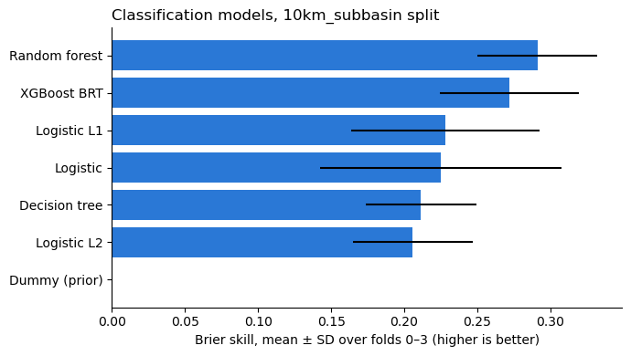
for threshold in THRESHOLDS:
fig, axs = panels(len(probs))
for ax, (name, prob) in zip(axs, probs.items()):
predicted = (prob >= threshold).astype(int)
ConfusionMatrixDisplay.from_predictions(y_true, predicted, labels=[0, 1], display_labels=["No exceedance", "Exceedance"], cmap="Blues", values_format="d", colorbar=False, ax=ax)
ax.add_patch(plt.Rectangle((-0.5, 0.5), 1, 1, fill=False, edgecolor="red", linewidth=2.5))
counts = threshold_counts(prob, threshold)
ax.set_title(f"{name}\nrecall {counts['recall']:.2f} | precision {counts['precision']:.2f}", fontsize=10)
fig.suptitle(f"Out-of-fold confusion matrices, threshold {threshold} ({TAG}); red = missed exceedances", x=0.01, ha="left")
plt.tight_layout()
save(fig, f"confusion_matrices_t{threshold}")
plt.show()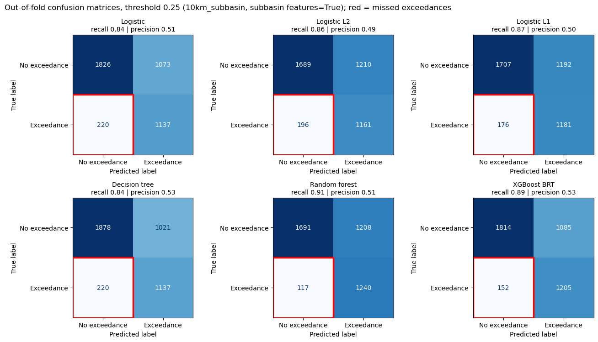
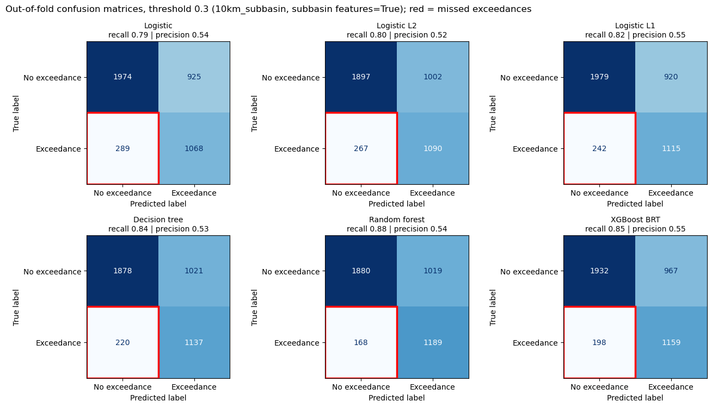
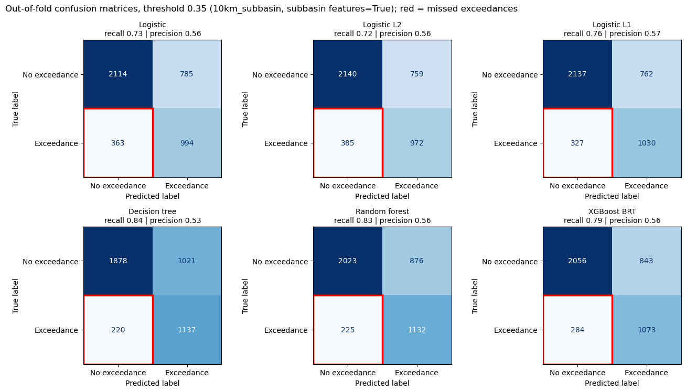
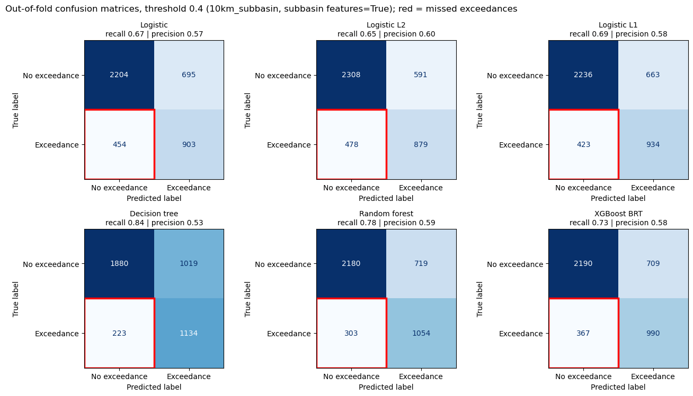
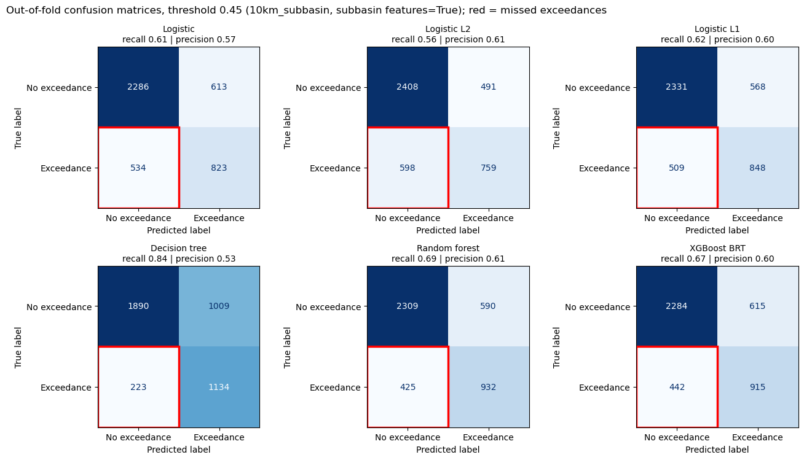
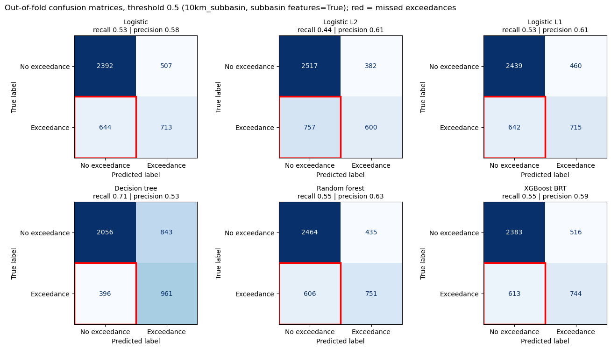
SHOW_MODELS = ["Random forest", "XGBoost BRT"]
fig, axs = plt.subplots(len(SHOW_MODELS), len(THRESHOLDS), squeeze=False, figsize=(4.3 * len(THRESHOLDS), 3.9 * len(SHOW_MODELS)))
for row, name in zip(axs, SHOW_MODELS):
for ax, threshold in zip(row, sorted(THRESHOLDS, reverse=True)): # 0.5 -> 0.4, left to right
predicted = (probs[name] >= threshold).astype(int)
ConfusionMatrixDisplay.from_predictions(
y_true,
predicted,
labels=[0, 1],
display_labels=["No exceedance", "Exceedance"],
cmap="Blues",
values_format="d",
colorbar=False,
ax=ax
)
ax.add_patch(plt.Rectangle((-0.5, 0.5), 1, 1, fill=False, edgecolor="red", linewidth=2.5))
counts = threshold_counts(probs[name], threshold)
ax.set_title(f"{name}, threshold {threshold}\nmissed {counts['missed_exceedances']} | " f"false alarms {counts['false_alarms']} | recall {counts['recall']:.2f}", fontsize=10)
fig.suptitle(f"Lowering the threshold: fewer missed exceedances, more false alarms ({TAG})", x=0.01, ha="left")
plt.tight_layout()
save(fig, "confusion_matrices_by_threshold")
plt.show()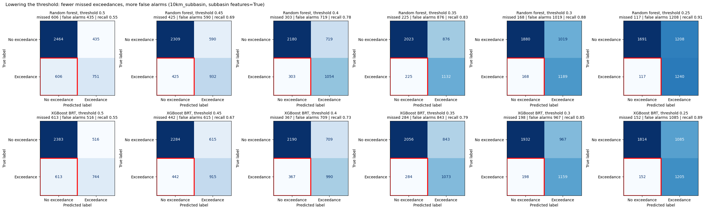
| missed_exceedances | false_alarms | recall | precision | false_positive_rate | share_flagged | ||
|---|---|---|---|---|---|---|---|
| model | threshold | ||||||
| Logistic | 0.25 | 220 | 1073 | 0.838 | 0.514 | 0.370 | 0.519 |
| 0.30 | 289 | 925 | 0.787 | 0.536 | 0.319 | 0.468 | |
| 0.35 | 363 | 785 | 0.732 | 0.559 | 0.271 | 0.418 | |
| 0.40 | 454 | 695 | 0.665 | 0.565 | 0.240 | 0.375 | |
| 0.45 | 534 | 613 | 0.606 | 0.573 | 0.211 | 0.337 | |
| 0.50 | 644 | 507 | 0.525 | 0.584 | 0.175 | 0.287 | |
| Logistic L2 | 0.25 | 196 | 1210 | 0.856 | 0.490 | 0.417 | 0.557 |
| 0.30 | 267 | 1002 | 0.803 | 0.521 | 0.346 | 0.492 | |
| 0.35 | 385 | 759 | 0.716 | 0.562 | 0.262 | 0.407 | |
| 0.40 | 478 | 591 | 0.648 | 0.598 | 0.204 | 0.345 | |
| 0.45 | 598 | 491 | 0.559 | 0.607 | 0.169 | 0.294 | |
| 0.50 | 757 | 382 | 0.442 | 0.611 | 0.132 | 0.231 | |
| Logistic L1 | 0.25 | 176 | 1192 | 0.870 | 0.498 | 0.411 | 0.558 |
| 0.30 | 242 | 920 | 0.822 | 0.548 | 0.317 | 0.478 | |
| 0.35 | 327 | 762 | 0.759 | 0.575 | 0.263 | 0.421 | |
| 0.40 | 423 | 663 | 0.688 | 0.585 | 0.229 | 0.375 | |
| 0.45 | 509 | 568 | 0.625 | 0.599 | 0.196 | 0.333 | |
| 0.50 | 642 | 460 | 0.527 | 0.609 | 0.159 | 0.276 | |
| Decision tree | 0.25 | 220 | 1021 | 0.838 | 0.527 | 0.352 | 0.507 |
| 0.30 | 220 | 1021 | 0.838 | 0.527 | 0.352 | 0.507 | |
| 0.35 | 220 | 1021 | 0.838 | 0.527 | 0.352 | 0.507 | |
| 0.40 | 223 | 1019 | 0.836 | 0.527 | 0.352 | 0.506 | |
| 0.45 | 223 | 1009 | 0.836 | 0.529 | 0.348 | 0.504 | |
| 0.50 | 396 | 843 | 0.708 | 0.533 | 0.291 | 0.424 | |
| Random forest | 0.25 | 117 | 1208 | 0.914 | 0.507 | 0.417 | 0.575 |
| 0.30 | 168 | 1019 | 0.876 | 0.538 | 0.352 | 0.519 | |
| 0.35 | 225 | 876 | 0.834 | 0.564 | 0.302 | 0.472 | |
| 0.40 | 303 | 719 | 0.777 | 0.594 | 0.248 | 0.417 | |
| 0.45 | 425 | 590 | 0.687 | 0.612 | 0.204 | 0.358 | |
| 0.50 | 606 | 435 | 0.553 | 0.633 | 0.150 | 0.279 | |
| XGBoost BRT | 0.25 | 152 | 1085 | 0.888 | 0.526 | 0.374 | 0.538 |
| 0.30 | 198 | 967 | 0.854 | 0.545 | 0.334 | 0.500 | |
| 0.35 | 284 | 843 | 0.791 | 0.560 | 0.291 | 0.450 | |
| 0.40 | 367 | 709 | 0.730 | 0.583 | 0.245 | 0.399 | |
| 0.45 | 442 | 615 | 0.674 | 0.598 | 0.212 | 0.359 | |
| 0.50 | 613 | 516 | 0.548 | 0.590 | 0.178 | 0.296 |
fig, axs = plt.subplots(1, 3, figsize=(19, 5.5))
for name, prob in probs.items():
PrecisionRecallDisplay.from_predictions(y_true, prob, name=name, ax=axs[0])
roc = RocCurveDisplay.from_predictions(y_true, prob, name=name, ax=axs[1])
color = roc.line_.get_color()
for threshold in THRESHOLDS: # mark where each threshold sits on the curves
counts = threshold_counts(prob, threshold)
marker = THRESHOLD_MARKERS[threshold]
axs[0].plot(counts["recall"], counts["precision"], marker, color=color, markeredgecolor="black")
axs[1].plot(counts["false_positive_rate"], counts["recall"], marker, color=color, markeredgecolor="black")
observed, predicted = calibration_curve(y_true, prob, n_bins=10, strategy="uniform")
axs[2].plot(predicted, observed, marker="o", color=color, label=f"{name} (Brier = {brier_score_loss(y_true, prob):.3f})")
for threshold, marker in THRESHOLD_MARKERS.items():
axs[1].plot([], [], marker, color="white", markeredgecolor="black", label=f"threshold {threshold}")
axs[0].axhline(prevalence, color="gray", linestyle="--", label=f"Prevalence = {prevalence:.3f}")
axs[0].set_title("Precision-recall")
axs[1].plot([0, 1], [0, 1], color="gray", linestyle="--", label="Random ranking")
axs[1].set_title("ROC (markers: thresholds)")
axs[2].plot([0, 1], [0, 1], color="gray", linestyle="--", label="Perfect calibration")
axs[2].axhline(prevalence, color="gray", linestyle=":", label=f"Prevalence = {prevalence:.3f}")
for threshold, color in THRESHOLD_COLORS.items():
axs[2].axvline(threshold, color=color, linewidth=1)
axs[2].set(xlim=(0, 1), ylim=(0, 1), xlabel="Mean predicted probability", ylabel="Observed exceedance frequency", title="Calibration (vertical lines: thresholds)")
for ax in axs:
ax.legend(fontsize=8)
ax.grid(alpha=0.3)
fig.suptitle(f"Out-of-fold curves ({TAG})", x=0.01, ha="left")
plt.tight_layout()
save(fig, "pr_roc_calibration")
plt.show()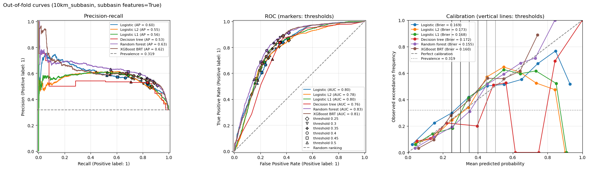
fig, axs = panels(len(probs))
for ax, (name, prob) in zip(axs, probs.items()):
ax.hist(prob[y_true == 0], bins=20, range=(0, 1), alpha=0.6, density=True, label="Actual: no exceedance")
ax.hist(prob[y_true == 1], bins=20, range=(0, 1), alpha=0.6, density=True, label="Actual: exceedance")
for threshold, color in THRESHOLD_COLORS.items():
ax.axvline(threshold, color=color, linewidth=1.2, label=f"threshold {threshold}")
ax.set(title=name, xlabel="Predicted probability of exceedance", ylabel="Density", xlim=(0, 1))
axs[0].legend(fontsize=8)
fig.suptitle(f"Predicted probabilities by actual nitrate status ({TAG})", x=0.01, ha="left")
plt.tight_layout()
save(fig, "probability_distributions")
plt.show()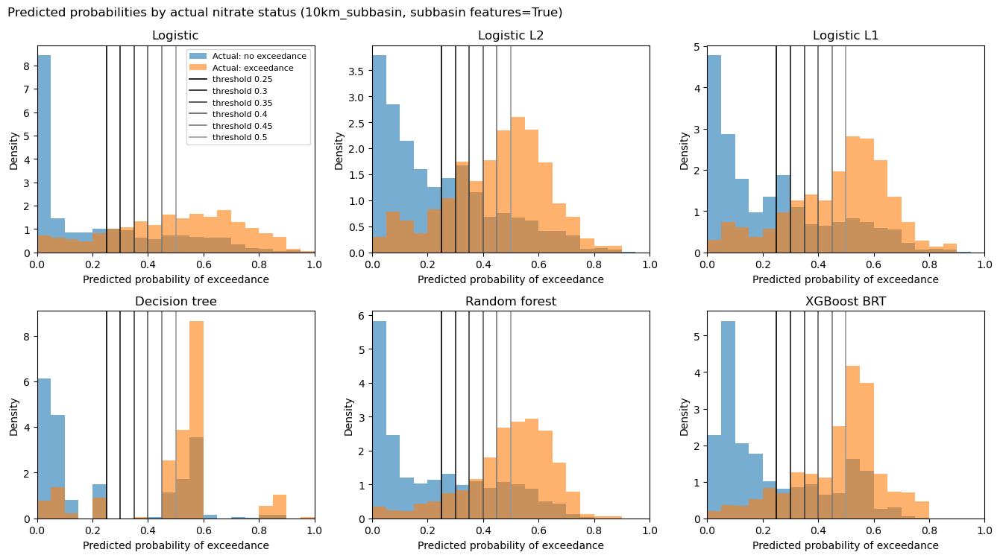
rows = []
for name, prob in probs.items():
for k in np.unique(folds):
in_fold = folds == k
actual, p = y_true[in_fold], prob[in_fold]
row = {
"model": name, "fold": k,
"roc_auc": roc_auc_score(actual, p),
"average_precision": average_precision_score(actual, p),
"brier_score": brier_score_loss(actual, p)
}
for threshold in THRESHOLDS:
predicted = (p >= threshold).astype(int)
rows.append({
**row,
"threshold": threshold,
"recall": recall_score(actual, predicted, zero_division=0),
"precision": precision_score(actual, predicted, zero_division=0),
"f1": f1_score(actual, predicted, zero_division=0),
"balanced_accuracy": balanced_accuracy_score(actual, predicted)
})
fold_metrics = pd.DataFrame(rows)
PROBABILITY_METRICS = {
"roc_auc": "ROC AUC",
"average_precision": "Average precision",
"brier_score": "Brier score (lower is better)"
}
THRESHOLD_METRICS = {
"recall": "Recall",
"precision": "Precision",
"f1": "F1",
"balanced_accuracy": "Balanced accuracy"
}
# Metrics that use the probabilities directly (the same at every threshold)
per_fold = fold_metrics[fold_metrics["threshold"] == THRESHOLDS[0]]
fig, axs = panels(len(PROBABILITY_METRICS) + 1, ncols=4, width=4, height=3.3)
for ax, (metric, title) in zip(axs, PROBABILITY_METRICS.items()):
for name, group in per_fold.groupby("model", sort=False):
ax.plot(group["fold"], group[metric], marker="o", label=name)
ax.set(title=title, xlabel="Test fold", xticks=np.unique(folds))
ax.grid(alpha=0.3)
handles, labels = axs[0].get_legend_handles_labels()
axs[len(PROBABILITY_METRICS)].legend(handles, labels, loc="center", frameon=False)
fig.suptitle(f"Probability scores on each spatial test fold ({TAG})", x=0.01, ha="left")
plt.tight_layout()
save(fig, "fold_metrics_probability")
plt.show()
# Metrics that depend on the threshold: one row of panels per threshold
fig, axs = plt.subplots(len(THRESHOLDS), len(THRESHOLD_METRICS), squeeze=False, figsize=(4 * len(THRESHOLD_METRICS), 3.1 * len(THRESHOLDS)), sharey="col")
for row, threshold in zip(axs, THRESHOLDS):
at_threshold = fold_metrics[fold_metrics["threshold"] == threshold]
for ax, (metric, title) in zip(row, THRESHOLD_METRICS.items()):
for name, group in at_threshold.groupby("model", sort=False):
ax.plot(group["fold"], group[metric], marker="o", label=name)
ax.set(title=f"{title}, threshold {threshold}", xlabel="Test fold", xticks=np.unique(folds))
ax.grid(alpha=0.3)
handles, labels = axs[0, 0].get_legend_handles_labels()
fig.legend(handles, labels, loc="center left", bbox_to_anchor=(1.0, 0.5), frameon=False)
fig.suptitle(f"Threshold scores on each spatial test fold ({TAG})", x=0.01, ha="left")
plt.tight_layout()
save(fig, "fold_metrics_threshold")
plt.show()
fold_metrics.groupby(["model", "threshold"], sort=False)[list(THRESHOLD_METRICS)].mean().round(3)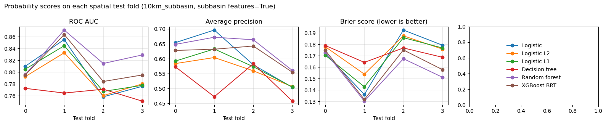
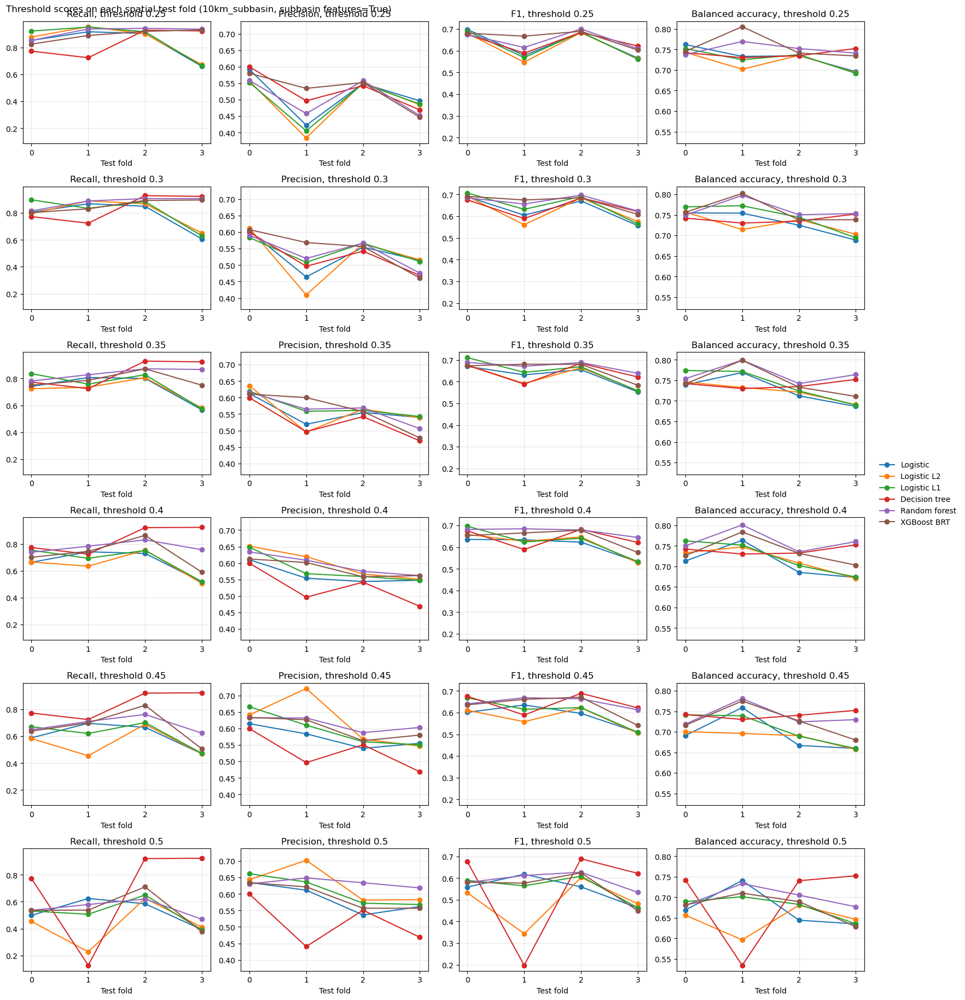
| recall | precision | f1 | balanced_accuracy | ||
|---|---|---|---|---|---|
| model | threshold | ||||
| Logistic | 0.25 | 0.834 | 0.515 | 0.632 | 0.731 |
| 0.30 | 0.783 | 0.534 | 0.631 | 0.731 | |
| 0.35 | 0.729 | 0.556 | 0.628 | 0.727 | |
| 0.40 | 0.663 | 0.564 | 0.606 | 0.709 | |
| 0.45 | 0.605 | 0.573 | 0.586 | 0.694 | |
| 0.50 | 0.525 | 0.586 | 0.550 | 0.672 | |
| Logistic L2 | 0.25 | 0.852 | 0.494 | 0.619 | 0.718 |
| 0.30 | 0.801 | 0.526 | 0.628 | 0.728 | |
| 0.35 | 0.711 | 0.559 | 0.623 | 0.723 | |
| 0.40 | 0.640 | 0.597 | 0.615 | 0.715 | |
| 0.45 | 0.549 | 0.619 | 0.574 | 0.686 | |
| 0.50 | 0.429 | 0.627 | 0.490 | 0.645 | |
| Logistic L1 | 0.25 | 0.864 | 0.498 | 0.627 | 0.727 |
| 0.30 | 0.812 | 0.542 | 0.649 | 0.745 | |
| 0.35 | 0.749 | 0.570 | 0.645 | 0.740 | |
| 0.40 | 0.679 | 0.581 | 0.624 | 0.723 | |
| 0.45 | 0.617 | 0.597 | 0.604 | 0.707 | |
| 0.50 | 0.520 | 0.609 | 0.556 | 0.677 | |
| Decision tree | 0.25 | 0.837 | 0.527 | 0.643 | 0.740 |
| 0.30 | 0.837 | 0.527 | 0.643 | 0.740 | |
| 0.35 | 0.837 | 0.527 | 0.643 | 0.740 | |
| 0.40 | 0.835 | 0.527 | 0.642 | 0.739 | |
| 0.45 | 0.835 | 0.529 | 0.644 | 0.741 | |
| 0.50 | 0.686 | 0.515 | 0.546 | 0.692 | |
| Random forest | 0.25 | 0.918 | 0.506 | 0.650 | 0.750 |
| 0.30 | 0.880 | 0.538 | 0.666 | 0.763 | |
| 0.35 | 0.837 | 0.564 | 0.672 | 0.765 | |
| 0.40 | 0.777 | 0.595 | 0.673 | 0.762 | |
| 0.45 | 0.686 | 0.614 | 0.646 | 0.738 | |
| 0.50 | 0.551 | 0.633 | 0.588 | 0.699 | |
| XGBoost BRT | 0.25 | 0.891 | 0.528 | 0.660 | 0.757 |
| 0.30 | 0.856 | 0.548 | 0.665 | 0.759 | |
| 0.35 | 0.790 | 0.561 | 0.654 | 0.746 | |
| 0.40 | 0.725 | 0.584 | 0.643 | 0.736 | |
| 0.45 | 0.669 | 0.601 | 0.627 | 0.724 | |
| 0.50 | 0.540 | 0.592 | 0.558 | 0.677 |
thresholds = np.linspace(0.05, 0.95, 91)
fig, axs = panels(len(probs))
best = []
for ax, (name, prob) in zip(axs, probs.items()):
curve = []
for t in thresholds:
predicted = (prob >= t).astype(int)
curve.append({
"threshold": t,
"precision": precision_score(y_true, predicted, zero_division=0),
"recall": recall_score(y_true, predicted, zero_division=0),
"f1": f1_score(y_true, predicted, zero_division=0)
})
curve = pd.DataFrame(curve)
for col in ["precision", "recall", "f1"]:
ax.plot(curve["threshold"], curve[col], label=col.capitalize())
for threshold, color in THRESHOLD_COLORS.items():
ax.axvline(threshold, color=color, linewidth=1)
ax.set(title=name, xlabel="Probability threshold", ylabel="Score", xlim=(0, 1), ylim=(0, 1))
ax.grid(alpha=0.3)
best.append({"model": name, **curve.loc[curve["f1"].idxmax()].to_dict()})
axs[0].legend(fontsize=8)
fig.suptitle(f"Precision, recall and F1 versus threshold; vertical lines at {THRESHOLDS} ({TAG})", x=0.01, ha="left")
plt.tight_layout()
save(fig, "threshold_metrics")
plt.show()
pd.DataFrame(best).set_index("model").round(3) # threshold with the best F1, per model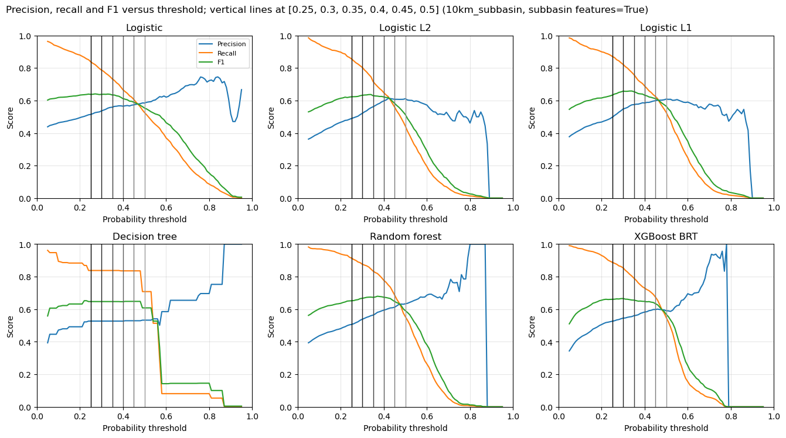
| threshold | precision | recall | f1 | |
|---|---|---|---|---|
| model | ||||
| Logistic | 0.27 | 0.525 | 0.821 | 0.641 |
| Logistic L2 | 0.34 | 0.555 | 0.746 | 0.637 |
| Logistic L1 | 0.34 | 0.573 | 0.773 | 0.658 |
| Decision tree | 0.22 | 0.522 | 0.869 | 0.652 |
| Random forest | 0.37 | 0.581 | 0.819 | 0.680 |
| XGBoost BRT | 0.30 | 0.545 | 0.854 | 0.666 |
Note that in the table above, “threshold” refers to the cutoff value that maximizes F1 for each model.
The goal of this project is to identify areas of potentially high nitrate risk for the sake of public health and to minimize the cost of deploying VTS. Thus, we wish to maximize both recall and precision.
Of all the models, the random forest is the most stable across folds and appears to be the strongest performer overall. We choose our final model to be a random forest classifier, with a threshold of 0.4.